Message Queues with Grails 3 and RabbitMQ
Learn how to use message queues with Grails 3 and RabbitMQ-Native plugin
Authors: Ben Rhine,Sergio del Amo
Grails Version: 4
1 Training
2 Getting Started
In this guide we will show you how to setup and use RabbitMQ with a Grails 3 application. We will be using the rabbitmq-native plugin
2.1 What you will need
2.2 How to complete the guide
To get started do the following:
-
Download and unzip the source
or
-
Clone the Git repository:
git clone https://github.com/grails-guides/grails-rabbitmq.git
The Grails guides repositories contain three folders:
-
initialInitial project. Often a simple Grails app with some additional code to give you a head-start. -
complete -
complete-analytics
In this guide you are going to create two Grails Applications. Both complete and complete-analytics apps are a completed example. It is the result of working through the steps presented by the guide and applying those changes to the initial folder.
To complete the guide, go to the initial folder
-
cdintograils-guides/grails-rabbitmq/initial
and follow the instructions in the next sections.
You can go right to the completed example if you cd into grails-guides/grails-rabbitmq/complete and grails-guides/grails-rabbitmq/complete-analytics.
|
3 Application Overview
In this guide, we setup a message queue to work across two different applications. In this guide, we have an app which lists books and book’s detail. We want to keep track of the number of times each book is viewed. We add a separate analytics app that keeps track of the number of times each one is viewed.
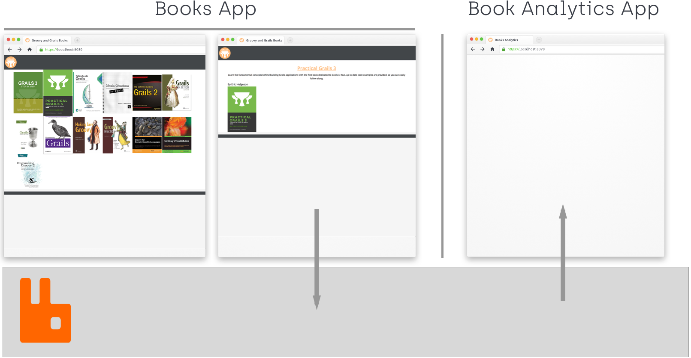
4 Message Queues - RabbitMQ
The construct of message queues provides for asynchronous communications, meaning that the sender and receiver do not need to interact with the message queue concurrently. When a message is sent it will be added to the queue and stored until the recipient retrieves them. Message queues can be used internally in an app or externally with multiple applications. A number of different implementations of message queues exist but one of the more popular and the one we will use for this guide is RabbitMQ.
4.1 Setup RabbitMQ service
To get RabbitMQ up and running on your system there are multiple different ways to get setup and going. You may choose to follow the directions from RabbitMQ themselves located here, but we would recommend following the way we set it up for parity.
To have a similar to real world setup we have chosen to setup our RabbitMQ using Docker as its quick, simple, and easy to tear down and setup again if you run into any issues. Docker is a container engine which allows for quick and simple installs of many different frameworks and products and helps avoid differences in local systems to provide a guaranteed clean instance of the product you are tying to run. We will assume you already have Docker installed on your system moving forward but if you do not you can install it from here.
Make sure Docker is running on your local system (You should see a little whale)
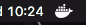
Once you know Docker is up and running from your terminal run the following command.
$ docker run -d --hostname my-rabbit --name some-rabbit -p 15672:15672 -p 4369:4369 -p 5671:5671 -p 5672:5672 -p 15671:15671 -p 25672:25672 rabbitmq:3-managementThe above command does a lot for you, it downloads and runs a dockerized instance of RabbitMQ, sets the hostname, gives the instance a name, configures the ports you will need to successfully access RabbitMQ, and includes the management interface so we can have more insight to how the message queue works. Once the command completes you will see output similar to the following.
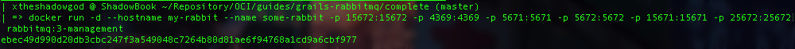
In addition to Docker you may like a more visual interface to see your RabbitMQ container in action. If thats the case go ahead and download "Kitematic" which is a GUI interface for your underlying Docker service. Docker will even help you get Kitematic from its menu.
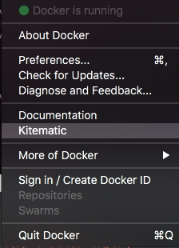
If you installed Kitematic you should now see your RabbitMQ instance running on the lefthand side.
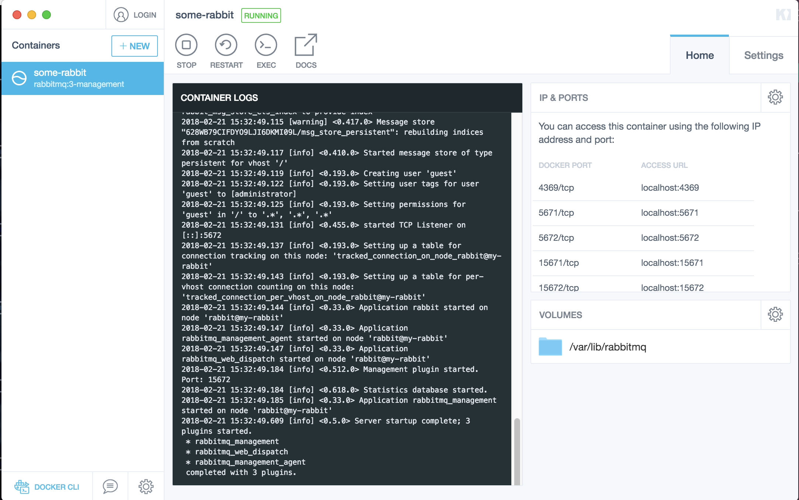
As mentioned above we included the RabbitMQ admin interface so we can see some details about our message queues. You can
access the admin interface located at localhost:15672.
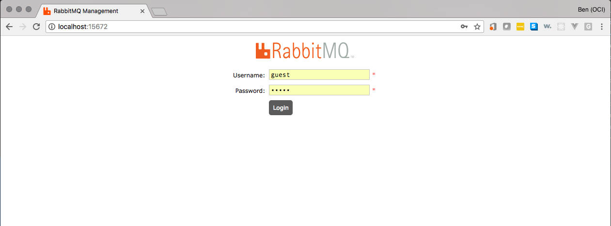
To login use the username / pass of guest / guest. After a successful login you will see the following page
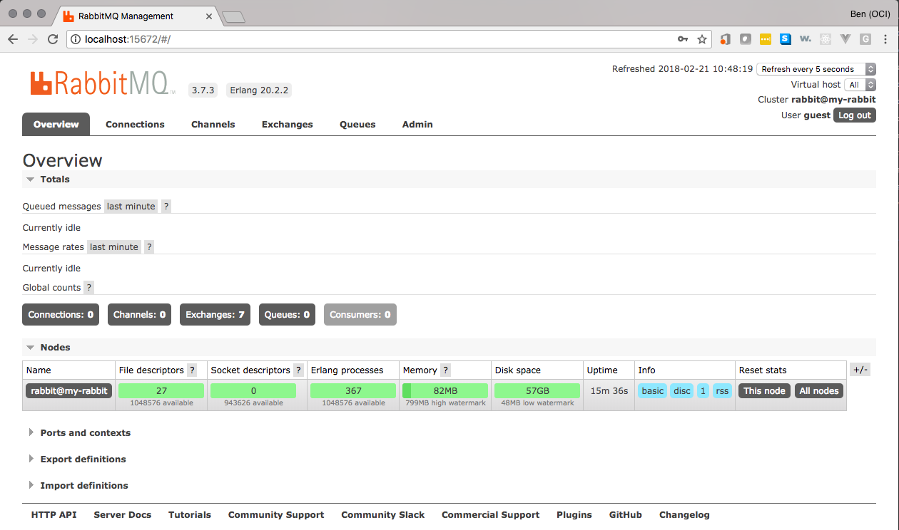
For more information on this specific docker container please view the documentation here.
5 Books Application
We have already added the necessary assets (book cover images) to the initial/grails-app/assets/images folder for you.
|
Moving forward we need to add additional functionality to our app since we will no longer be using just a single application.
To start we first need to add a Book domain.
link:../snippets/grails-app/domain/demo/Book.groovy[role=include]We will be using a custom findAll to return our list of books and for that we will need to use an additional BookImage
object. First create your BookImage in the src/main/groovy directory
link:../snippets/src/main/groovy/demo/BookImage.groovy[role=include]Create default CRUD actions for Book leveraging GORM data services.
link:../snippets/grails-app/services/demo/BookDataService.groovy[role=include]Next connect our new controller up to the services that we just created. Our index will leverage our custom findAll to
return a complete list of books while our show will make use of the data services findById.
link:../snippets/grails-app/controllers/demo/BookController.groovy[role=include]Then we need to actually create the book data with our Bootstrap.groovy
link:../snippets/grails-app/init/demo/BootStrap.groovy[role=include]Lastly we update our url mapping so that our default url will display our list of books
link:../snippets/grails-app/controllers/demo/UrlMappings.groovy[role=include]| 1 | Updated default URL |
Run the app
$ ./gradlew bootRun
5.1 RabbitMQ publisher
Add RabbitMQ Native plugin to the initial app.
link:../snippets/build.gradle[role=include]Once we have added the dependency we can go ahead and add the necessary config to connect to RabbitMQ.
link:../snippets/grails-app/conf/application.yml[role=include]| 1 | All connections require a name but you can name it whatever you want |
| 2 | Where RabbitMQ is located. In this case on our local system but this can also be a web url or ip address |
| 3 | Default username guest |
| 4 | Default password guest |
| 5 | Creation of a bookqueue |
When a book’s details is viewed we publish a message to RabbitMQ. In order to do that we create an interceptor.
Create a new interceptor in the grails-app/controllers/demo called BookShowInterceptor.groovy.
link:../snippets/grails-app/controllers/demo/BookShowInterceptor.groovy[role=include]| 1 | Inject the rabbitMessagePublisher |
| 2 | Intercept when the book controller show method is called |
| 3 | after method executes after the action but prior to view rendering. It returns true to continue processing to the view. |
| 4 | Model is available in the after method to retrieve data about the current object |
| 5 | Send specified message using a specific queue. When sending a message using send no return message is expected. |
6 Building Analytics app
Create a new Grails 3 application for this additional app. For example by using Grails Application Forge or the command line:
$ grails create-app initial-analytics --profile=rest-apiFor the multi app part of this guide we will need to be able to run both apps simultaneously. To avoid a running port conflict update your initial-analytics app application.yml to include the following.
link:complete-analytics/grails-app/conf/application.yml[role=include]Create a Domain class BookPageView which will keep track of how many times a book has been viewed.
link:complete-analytics/grails-app/domain/demo/BookPageView.groovy[role=include]As before create default actions for our BookPageView leveraging data services.
link:complete-analytics/grails-app/services/demo/BookPageViewDataService.groovy[role=include]| 1 | Use JPA-QL query to perform a projection |
| 2 | Implement update operations using JPA-QL |
Add an integration test:
link:complete-analytics/src/integration-test/groovy/demo/BookPageViewDataServiceSpec.groovy[role=include]6.1 RabbitMQ consumer
We need to create a new consumer, we will create the consumer in
the initial-analytics application. First navigate to the analytics application
$ cd ~/yourProjectLocation/initial-analyticsThen as before create a new consumer
$ ./grailsw create-consumer demo.BookPageViewConsumerEdit the generated consumer to look as follows
link:complete-analytics/grails-app/rabbit-consumers/demo/BookPageViewConsumer.groovy[role=include]| 1 | Add our page view service |
| 2 | Tell our consumer which queue to connect to |
| 3 | Tell our consumer what to do when it receives a message. Call our custom increment action. |
7 Running the apps
To see our two apps communicate asynchronously using RabbitMQ we have to run both apps simultaneously. To do that open two separate terminals. In terminal one …
$ cd ~/yourProjectLocation/initialthen
$ ./gradlew bootRunNext in terminal two …
$ cd ~/yourProjectLocation/initial-analyticsthen
$ ./gradlew bootRunNow with both apps running open two browser tabs. In tab one navigate to http://localhost:8080 and you should see a
list of books available.
then in your second tab navigate to http://localhost:8090/BookPageView and you should see an empty array.
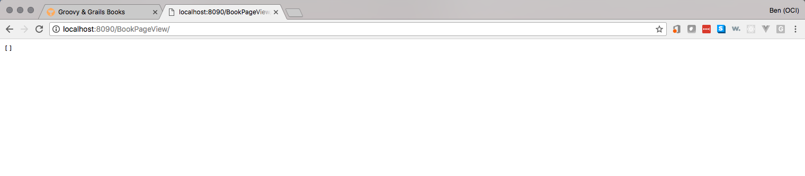
Select a book to click and after clicking you should see the book description
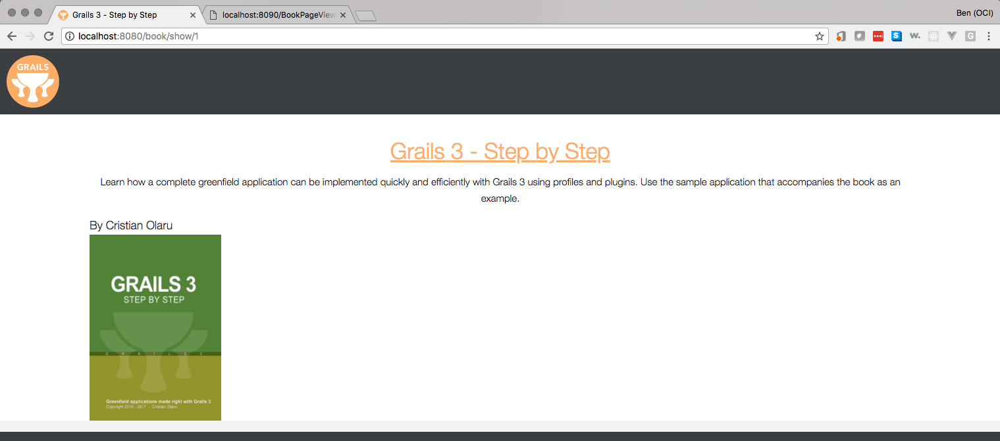
And if you go refresh the analytics page you will now see that book 1 has been viewed 1 time.
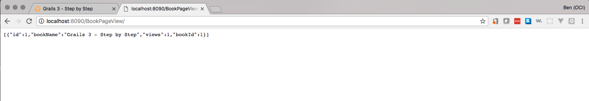
Try this on several books, and go back and revisit a previous book and then refresh your analytics page to see how many views each book has.
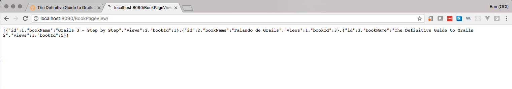
Additionally if you view the terminal where you are running the analytics app you can see the messages it received.
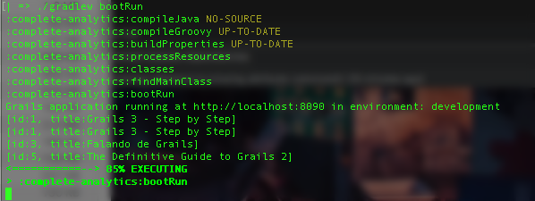
8 Rabbit Management
As mentioned earlier in section 3.1 [setupRabbit] we have access to the rabbit management console located at http://localhost:15672.
Go ahead and navigate to the console and login. Once logged in select Queues from the menu.
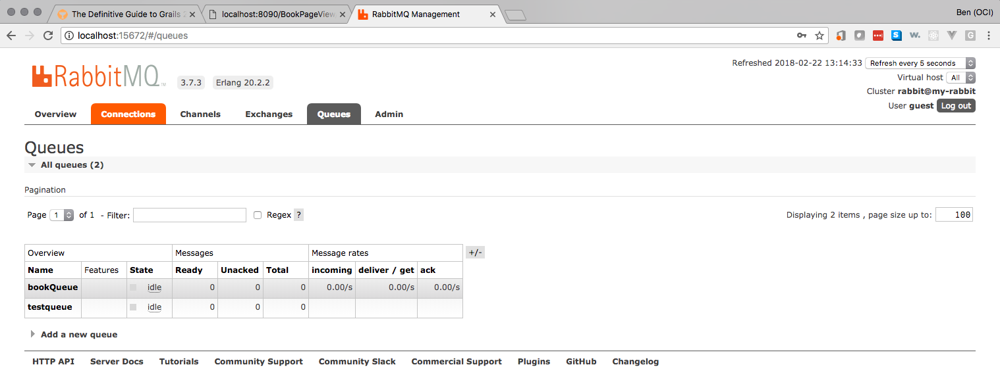
from here you can see the two queues which we have created with our applications. Now select the `Overview tab and return to the management home page. When looking at the home page note that there are 0 messages in the queue.
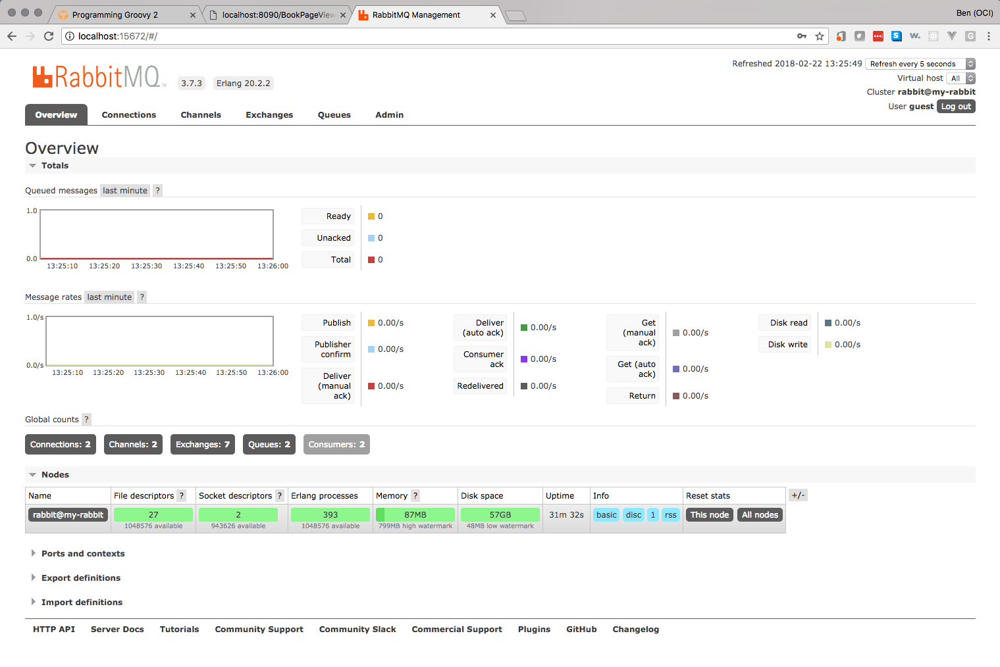
At this point stop your analytics app from the terminal with Ctrl-C and then go back to your still running app and go click
on and view a few more books. Once you have viewed a few more books, return to your admin home and you will see that new
messages have been generated and are waiting in the queue.
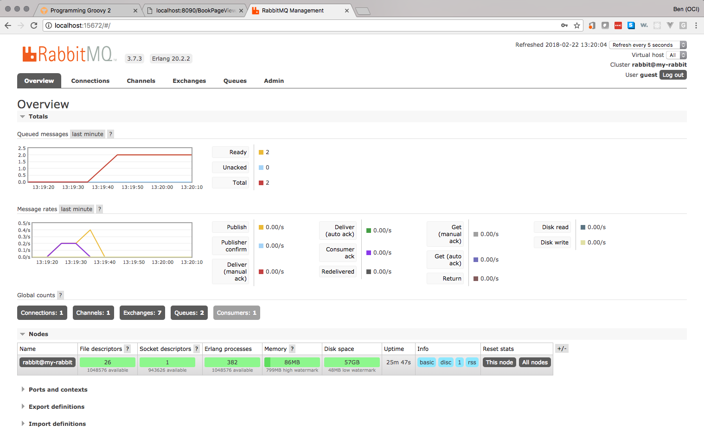
Go ahead and restart your analytics app now from your terminal
$ ./gradlew bootRunOnce your analytics app has restarted you will see it process the waiting messages and when you return to the rabbit admin you will see the message queue has returned to 0.
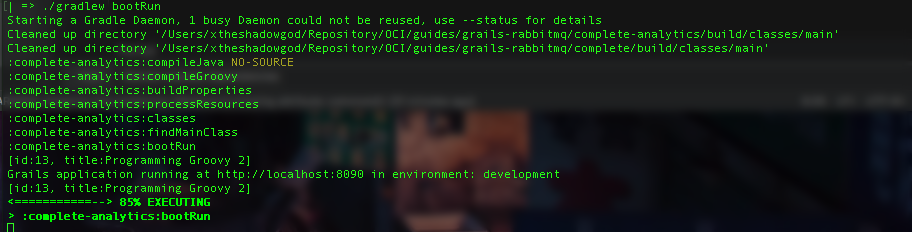
9 Next Steps
To further your understanding read through the plugin documentation found here. Additionally feel free to read the RabbitMQ documentation here, and take a look at there many examples available in different languages here.